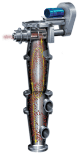
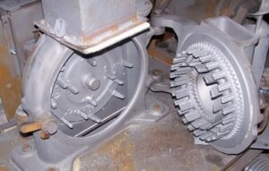
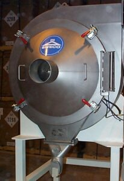
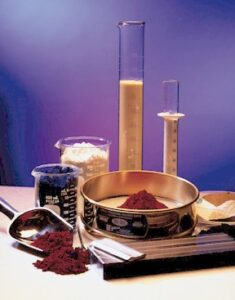

Fluid Energy Processing Divison
Fluid Energy Equipment division specializes in ultra-fine grinding and flash drying of powders. The Processing division of Fluid Energy dries and mills products with the full product line of equipment that Fluid Energy designs and builds. All three types of mills and the loop dryer are available for use at the Hatfield processing facility.
In addition to the equipment designed and built by Fluid Energy, the Hatfield facility has additional capabilities to process granular materials at different scales for milling and drying. These facilities can be used for interim production while new equipment is being assembled, or the processing division can process materials on an ongoing basis as a contract manufacturing or toll arrangement.

In addition to processing in Fluid Energy designed mills and dryers, there are several complimentary powder processing operations at the Hatfield facility. These include the following:
- 1. Screening and Particle size classification
- 2. Coarse Grinding
- 3. Blending/Coating
- 4. Repackaging
- 5. Food Grade Processing
Screening and particle size classification can be used to separate out material that does not fall within the necessary particle size specification. Coarse grinding is typically more energy efficient than fine jet-milling. Materials for fine grinding can be “pre-ground” in a coarse grinder to reduce the amount of fine grinding required.
Blending/Coating can combine two or more materials with different properties to create the final product. Materials can be repackaged in smaller or larger containers as required by customers. Separate areas are maintained for processing of Food Grade materials to minimize contamination with technical grade materials.
Characterization of the initial and final powders is done at the Hatfield facility to confirm the desired processing is realized.

Screening and Particle size classification. Vibratory screen with ultrasonic capability is available to create cut sizing of product. Coarse material and/or fine material above or below a specified size can be extracted from the bulk material. A Roto-sizer is also available for this type of classification. This device can separate material down to sizes of 3-microns.

Coarse Grinding. Coarse grinding equipment is available at the Hatfield facility. This equipment can be used as the only step in communition of the granular material. Or, if sizes below 45 microns are required, this can be an initial step before finer grinding in one of the jet mills. Pin mill and hammer mill equipment are available.
Blending/Coating. Ribbon and paddle mixers are available for blending of different powders. These have also been used to blend a liquid product on top of a powder to create a coated material. Similarly, a coated product has been made by blending two powders where one of the powders is a lower melting temperature material. Using hot air to melt the lower melting point material creates a coating on the second. Jet mills run at low pressure can also be used for more intense blending with minimal grinding of the particles.
Repackaging. If material needs to be repackaged from small containers or bags to larger ones, this can be handled at the Hatfield facility. Also, if the material needs to be moved from larger containers to smaller ones, the reverse process can be done.
Food Grade Milling. Fluid Energy has a food grade area within the site that meets the FDA 21CFR 117 regulations. This area can be used for milling and blending of food grade materials. The equipment is in a separate building away from the technical grade processing. This ensures no contamination of the food grade products.
Quality Control Laboratory. The Hatfield site can characterize the powder before and after processing in various ways. Typically, communition processing requires measurement of particle size changes in the granular material. The quality control lab can measure various aspects of particle size along with additional powder characteristics which include the following:

- Particle Size and Size Distribution
- Laser diffraction measurement of particle size and size distribution
- Grind gage to test for oversize particles within a powder sample
- Sieve screens for coarse measurement of particle size distribution
- pH: Slurried powder can be checked for shifts in pH.
- Moisture: Moisture level of final powder is measured in oven or dedicated moisture analyzer
- Color: Spectrophotometer used to measure shifts in color against unmilled standard
In addition, other specialized testing (e.g. Gas Chromatograph) have been developed to meet customer’s needs as required.
Contact us here to discuss powder processing needs where Fluid Energy Processing can help.